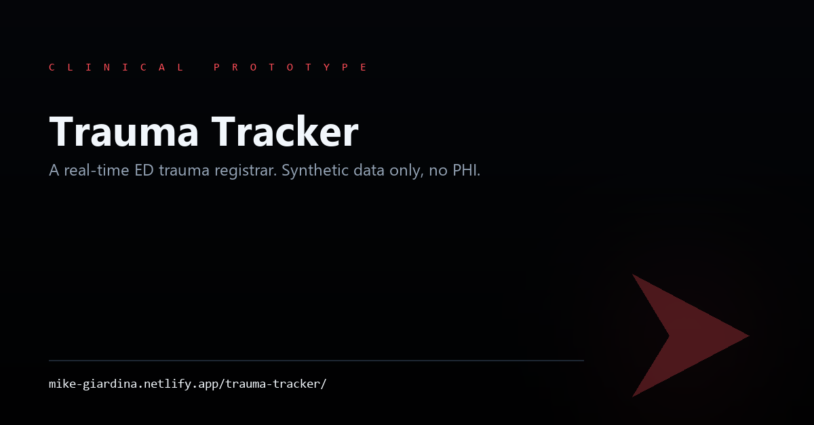
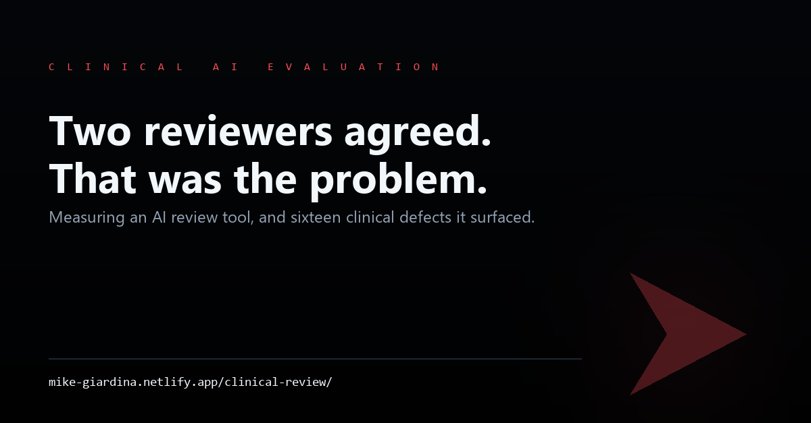

THE PORTFOLIO / CLINICAL AI PROTOTYPES & EVALUATION
ED Supervisor · Clinical Educator · RN, BSN, CEN
From the bedside.
To better systems.
Nineteen years in nursing, seventeen at a Level I trauma center: ED Supervisor and Clinical Educator, Epic ASAP Super User and the ED nursing liaison to Epic since before go-live, ATCN Course Director. Since May 2025 I have been building clinical AI prototypes on my own and testing what they get wrong.
SELECTED WORK

Built at the July 2026 Abridge, Anthropic and Lightspeed hackathon, with a physician teammate auditing clinical accuracy. Values are captured and timestamped as they are spoken, scores are computed from published tables, and the nursing narrative is written during the resuscitation. Synthetic data only.

Two AI reviewer personas over a clinical-education corpus, keeping only the findings both flagged. When I measured that agreement, it had passed sixteen real clinical defects, several involving dosing, because both reviewers shared the same blind spots. The write-up covers how it was found and what replaced it.
The physiological engine, the Body Simulator that runs on it, a standalone training simulator (PatientSim) with its own simpler physiology model, and a consumer iPhone app at an early stage and on hold.
Read this before the cards. The engine is pre-1.0 and still being validated, nothing below is used with real patient data, and the simulators are prototypes. Where a card says concept, nothing is built yet, and the card says so.
Where something is open to click, it is linked. Where there is only a recorded walkthrough, you can watch the tool run without an unvalidated clinical tool being put in front of the public. Where there is no link, the tool touches clinical decision-making or is not yet ready to share, and you should weight it accordingly.
Evidence-Based Physiology, Computed in Real Time
A model of a patient that runs forward in time, grounded in published physiology and pharmacology. Vitals, labs and drug response change with what happens to the patient and with what the learner does, and each model component cites the published work it is based on.
Clinical Simulator Front-End
The screen a learner works from, connected live to the physiology engine. The monitor's vitals and four waveforms are calculated from the engine's current state, and a drug given in the simulator changes what the engine calculates next. If the connection drops, the screen switches to a simplified fallback.
AI-Driven Clinical Training Simulator
A standalone training simulator with its own simpler physiology model. Vitals change over time as the case runs, the case changes with what the learner does, and an AI model plays the patient. Built for ED education days.
Kymora, Consumer iOS Application
An iPhone app designed to keep the medication list on the phone and pair it with a simplified version of the physiology model running on the phone, so health data would not need to go to a server.
Prototypes built around bedside problems seen in emergency and critical care. None is a released product.
Clinical Teaching Articles, Rebuilt as Living Cases
Each clinical teaching article (grounded in peer-reviewed literature) re-staged as a real-time patient case. A live monitor tracks the patient as you scroll: heart rate, blood pressure, and an ECG that morphs with the physiology, while the clinical reasoning surfaces exactly when the case reaches it. The sources are the same ones the article cites.
A Real-Time ED Trauma Registrar
Built at the July 2026 Abridge, Anthropic and Lightspeed hackathon, with a physician teammate auditing clinical accuracy. Documentation runs during the resuscitation: the nursing narrative and the accreditation clocks come from one set of timestamped events, and any question nobody answered stays in the report as an open item.
Contextual Clinical Decision Support
A clinical assistant that works out what kind of question is being asked and applies guardrails based on published scope-of-practice frameworks for the asker's state, with the policy source shown. The guardrails work in the demo; whether they hold against someone trying to get around them is untested.
Each came out of something watched breaking at the bedside. None is finished enough to hand you.
Open-Access Nursing Education
A library of clinical articles drafted with AI tools from a reviewed source corpus and checked against their citations: emergency medicine, critical care, pharmacology, clinical reasoning. Open access.
Nineteen years in nursing, seventeen at Duke LifePoint Conemaugh, a Level I trauma center, where I am now Emergency Department Supervisor and Clinical Educator. CEN. Clinical Driver on the 2016 facility-wide Epic implementation, ASAP Super User and Super Trainer, and the ED nursing liaison to Epic since before go-live.
The tools on this page come from problems I have watched happen on shift.
In May 2025 I began building clinical AI prototypes on my own; in 2026 they took the name Kymora. What came out of that year is a set of working prototypes, not released products: clinical decision support, patient simulation, scheduling, alerting and education tooling.
In 2026 the engine became the core of the Kymora product line: the Body Simulator runs on it,
and a simplified version of it is being prepared to run on a phone, for a consumer iPhone app at an early stage and on hold.
Patent pending.
I am looking for clinical evaluation, implementation and program roles with companies building tools for clinicians.
Start from the clinical problem. Build for the person who is already at capacity on shift; every added step has to pay for itself.
I check the output clinically before it is used · Answers show the policy or source they came from · Separate AI reviewers that never see each other's work
Emergency Medicine · Critical Care · Clinical Education · Epic ASAP · Trauma · Scope-of-Practice Frameworks
Web · Python physiology engine · iOS
HIPAA de-identification (Safe Harbor and Expert Determination) · keeping patient data on the device · where decision support becomes a regulated medical device
Pennsylvania, US
Open to Remote Opportunities